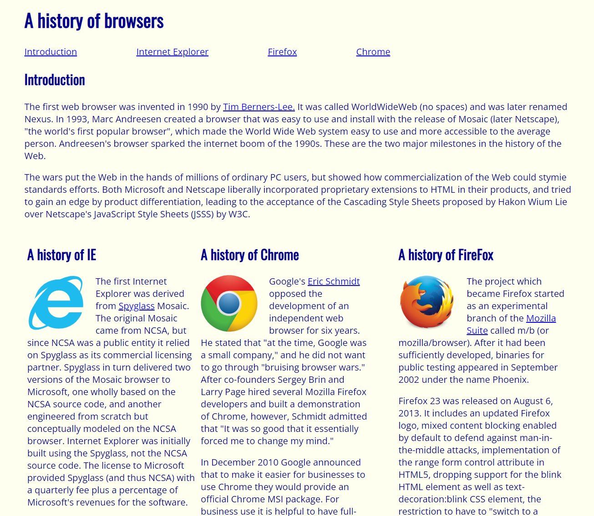
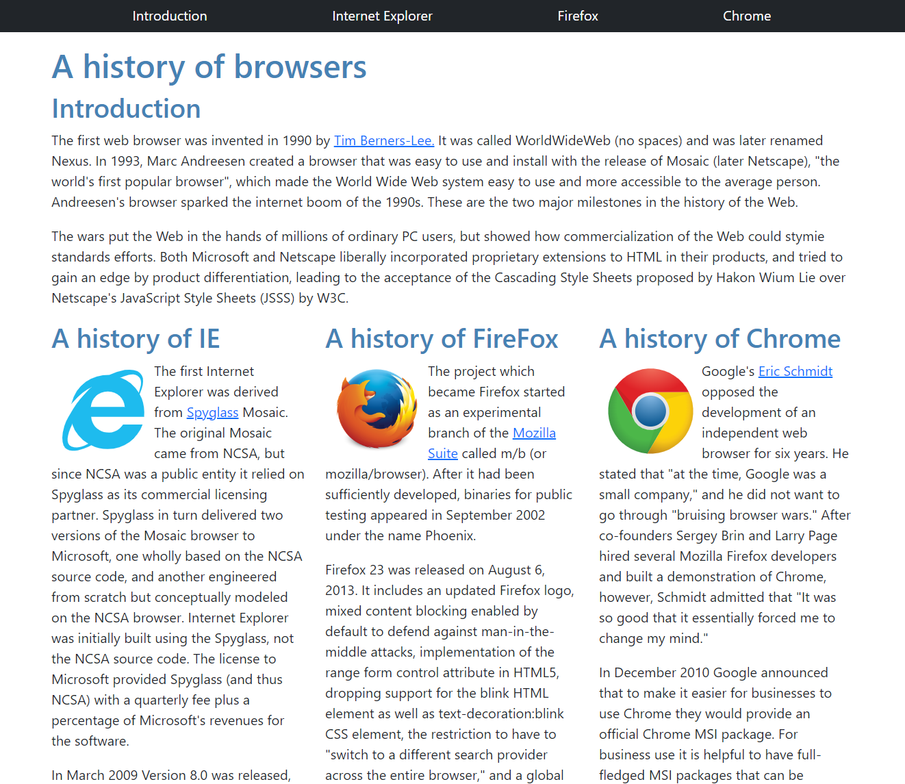

Before learning about UI frameworks, the majority of my time coding in HTML and CSS was spent Googling how to set up and align the various elements of a webpage, and the only Bootstrap I knew was a pirate from a Disney movie. There are dozens of searches in my browser history for things like “how to set up columns and rows,” “how to center an image,” and other seemingly simple things that may be difficult (or at the very least, time consuming) to achieve in pure HTML/CSS. After learning Twitter Bootstrap, my web development life has gotten much easier and my search history has gotten much less embarrassing.
We were assigned to create a simple website using HTML and CSS that displayed a brief history of web browsers (below, left). It is clear that the resulting webpage is not ideal. The biggest issue is the column margins (the other styling choices such as font and color can easily be modified in CSS). The next assignment was to recreate the website using Twitter Bootstrap (below, right). This time around, the website looks much better. The columns are properly aligned, the default Bootstrap font is clean, and that top menu? Though the version on the right is definitely possible to achieve with pure HTML/CSS, it would be more time consuming to create.


Halfway through writing this essay, I realized that the Techfolios website I am currently writing this essay on uses Twitter Bootstrap as its UI framework. Notice how those those two screenshots above are nicely aligned in two columns? They also scale depending on the size of the browser window. The best part is, I didn’t even have to Google “align two images center in two columns bootstrap,” because Bootstrap’s syntax is so easy to remember and to implement. No CSS classes were created and no new .css file had to be written. The code for the two images above:
<div class="row">
<div class="col">
<figure>
<img width="100%" src="../img/essays/browser-history-html.png">
<figcaption class="py-1 text-center"><i>Pure HTML/CSS</i></figcaption>
</figure>
</div>
<div class="col">
<figure>
<img width="100%" src="../img/essays/browser-history-bootstrap.png">
<figcaption class="py-1 text-center"><i>Implementing Twitter Bootstrap</i></figcaption>
</figure>
</div>
</div>
The main advantage that I’ve noticed using a UI framework is that all of the CSS classes are prebuilt for you. Simply assigning a div’s class to "row or "col" ensures that they are set up correctly without having to go manually go in and define the classes in a .css file. The width="100% class sets the image to take up the entire space of the column and py-1 sets the padding on the Y-axis to 1.
Implementing a specific UI framework leads to consistency across platforms and helps define coding standards so that developers are not required to continuously relearn new standards for every different project they work on. Another major benefit is efficiency. Developers can generally create websites much more quickly using a UI framework compared to if they were to start completely from scratch only using HTML and CSS. UI frameworks such as Twitter Bootstrap also have a large library of icons available for use, saving more of the developer’s time that might have been instead spent creating icons.
While learning a specific UI framework’s syntax does take a little time and effort, I think it is definitely worth it in the long run. The time saved by implementing these frameworks is much more significant than the time invested in learning them.